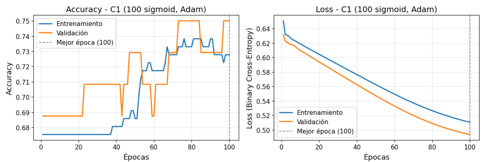
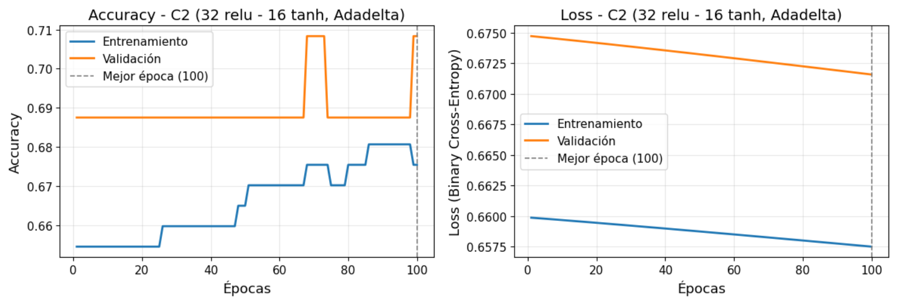
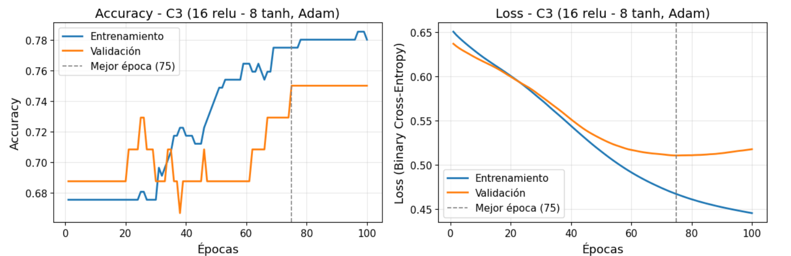
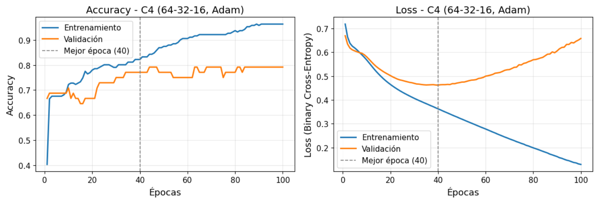

C1 — 100 Sigmoid, Adam

Descenso suave y sostenido de la pérdida tanto en entrenamiento como en validación hasta la época 100, sin signos de sobreajuste en el horizonte evaluado.
Visualización en alta resolución de curvas de aprendizaje (Accuracy y Binary Cross-Entropy Loss), métricas de validación y comparación en conjunto de prueba (Ntest = 60) frente a los modelos de referencia de Chicco & Jurman (2020) con 11 variables clínicas.
Desempeño por configuración en el conjunto de validación durante 100 épocas de entrenamiento. Haz clic en los encabezados para ordenar.
| Configuración ↕ | Parámetros ↕ | Mejor Época ↕ | Min val_loss ↕ | val_loss (Ép. 100) ↕ | val_acc (Mejor Ép.) ↕ | Max val_acc ↕ |
|---|---|---|---|---|---|---|
| C1 (100 sigmoid, Adam) | 1301 | 100 | 0.4936 | 0.4936 | 0.7500 | 0.7500 |
| C2 (32 relu - 16 tanh, Adadelta) | 929 | 100 | 0.6716 | 0.6716 | 0.7083 | 0.7083 |
| C3 (16 relu - 8 tanh, Adam) Seleccionado | 337 | 75 | 0.5105 | 0.5176 | 0.7500 | 0.7500 |
| C4 (64-32-16, Adam) | 3393 | 40 | 0.4620 | 0.6575 | 0.7708 | 0.7917 |
val_loss (Binary Cross-Entropy). C3 logra el mejor equilibrio entre capacidad (337 parámetros) y generalización sin sobreajuste severo.
Comparación directa contra la Tabla 4 del artículo de Chicco & Jurman (2020) utilizando las 11 variables clínicas.
| Modelo ↕ | CM [[TN,FP],[FN,TP]] | Acc. ↕ | Sens. ↕ | Spec. ↕ | Prec. ↕ | NPV ↕ | MCC ↕ |
|---|---|---|---|---|---|---|---|
| C1 (100 sigmoid, Adam) | [[39,2],[14,5]] | 0.7333 | 0.2632 | 0.9512 | 0.7143 | 0.7358 |
0.3106
|
| C2 (32 relu - 16 tanh, Adadelta) | [[40,1],[18,1]] | 0.6833 | 0.0526 | 0.9756 | 0.5000 | 0.6897 |
0.0732
|
| C3 (16 relu - 8 tanh, Adam) Mejor MLP | [[39,2],[13,6]] | 0.7500 | 0.3158 | 0.9512 | 0.7500 | 0.7500 |
0.3654
|
| C4 (64-32-16, Adam) | [[37,4],[12,7]] | 0.7333 | 0.3684 | 0.9024 | 0.6364 | 0.7551 |
0.3256
|
| RF [1] Ref. | Prom. 100 corr. | 0.740 | 0.491 | 0.864 | — | — |
0.384
|
| Paper DT Ref. | Prom. 100 corr. | 0.737 | 0.532 | 0.831 | — | — |
0.376
|
| Paper GB Ref. | Prom. 100 corr. | 0.738 | 0.477 | 0.860 | — | — |
0.367
|
| Paper RL Ref. | Prom. 100 corr. | 0.730 | 0.394 | 0.892 | — | — |
0.332
|
| Paper OR Ref. | Prom. 100 corr. | 0.729 | 0.383 | 0.892 | — | — |
0.319
|
| Paper ANN Ref. | Prom. 100 corr. | 0.680 | 0.428 | 0.815 | — | — |
0.262
|
Evolución en entrenamiento y validación a lo largo de 100 épocas. Haz clic en cualquier figura para ampliarla en pantalla completa.



val_loss en la época 75 (0.5105) con una divergencia posterior mínima (0.5176 en época 100), logrando el mayor MCC (0.3654) y Accuracy (0.7500) en prueba.

Desglose visual de Verdaderos Negativos (TN), Falsos Positivos (FP), Falsos Negativos (FN) y Verdaderos Positivos (TP) en la mejor época de cada configuración.